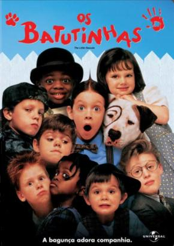

|  | Os Batutinhas
Direção: Penelope Spheeris
Roteiro Stephen Mazur, Penelope Spheeris
Elenco: Travis Tedford, Bug Hall, Brittany Ashton Holmes
A turma de pestinhas embarca em mais uma história cheia de confusões! Alfafa é julgado culpado em uma reunião do Clube dos Homens que Odeiam Mulheres, porque se apaixonou por Darla. Seus amigos fazem de tudo para acabar com o romance dos dois, mas Alfafa está disposto a continuar o namoro. |
|
Acesse mais em YouTube SESSÕES
|